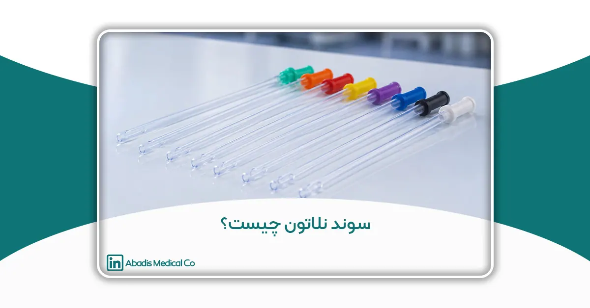
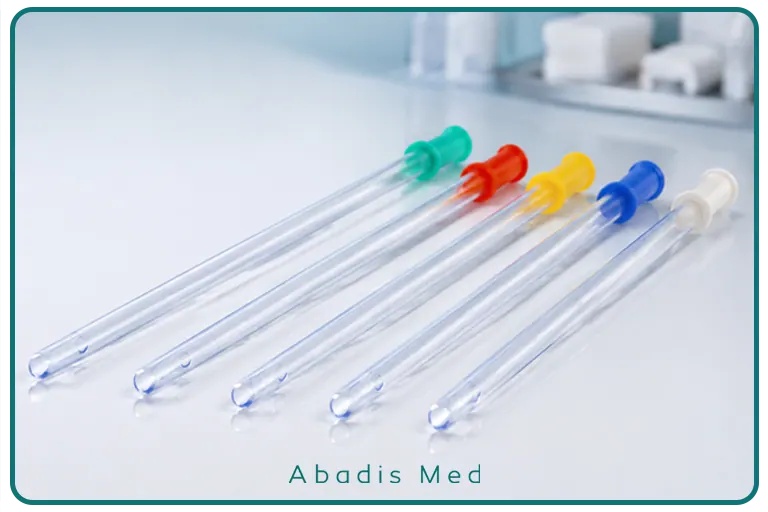

مقدمه
تخلیه ایمن و مؤثر ادرار یکی از مهمترین اقدامات در مراقبت از بسیاری از بیماران بستری و سرپایی است. در شرایطی مانند احتباس ادرار، برخی بیماریهای نورولوژیک، آسیبهای نخاعی، جراحیهای اورولوژی یا زمانی که بیمار قادر به تخلیه طبیعی مثانه نیست، استفاده از سوندهای ادراری به یکی از ضروریترین تجهیزات پزشکی تبدیل میشود.
در میان انواع مختلف کاتترهای ادراری، سوند نلاتون (Nelaton Catheter) به دلیل ساختار ساده، انعطافپذیری مناسب و کاربرد گسترده، یکی از پرمصرفترین سوندهای یکبارمصرف در مراکز درمانی محسوب میشود. این سوند برای تخلیه موقت مثانه طراحی شده و برخلاف سوند فولی، فاقد بالن نگهدارنده است؛ به همین دلیل پس از تخلیه ادرار از بدن خارج میشود و برای استفاده طولانیمدت مناسب نیست.
امروزه سوند نلاتون در بیمارستانها، اتاقهای عمل، بخشهای اورژانس، مراکز توانبخشی، کلینیکهای تخصصی و حتی در برخی بیماران نیازمند سونداژ متناوب (Intermittent Catheterization) کاربرد گستردهای دارد. انتخاب صحیح سایز، رعایت اصول استریل و استفاده از محصولی باکیفیت، نقش مهمی در کاهش خطر عفونتهای دستگاه ادراری، آسیب به مجرای ادرار و افزایش ایمنی بیمار دارد.
در این مقاله، با ساختار، کاربردها، انواع، سایزبندی، رنگبندی استاندارد، تفاوت سوند نلاتون با سایر سوندهای ادراری، نکات مهم در انتخاب و استفاده، عوارض احتمالی و استانداردهای مرتبط با تولید این محصول آشنا خواهید شد.
سوند نلاتون چیست؟
سوند نلاتون (Nelaton Catheter) یک کاتتر ادراری یکبارمصرف، استریل، انعطافپذیر و بدون بالن است که برای تخلیه موقت ادرار از مثانه یا نمونهگیری استریل ادرار استفاده میشود. این سوند از طریق مجرای ادرار (Urethra) وارد مثانه شده و پس از تخلیه کامل ادرار، از بدن خارج میشود.
نام این سوند از آگوست نلاتون (Auguste Nélaton)، جراح برجسته فرانسوی قرن نوزدهم، گرفته شده است که در توسعه ابزارهای جراحی و پزشکی نقش مهمی داشت.
برخلاف سوند فولی که دارای بالن بوده و برای ماندگاری طولانیمدت در مثانه طراحی شده است، سوند نلاتون فاقد هرگونه مکانیزم نگهدارنده است. به همین دلیل، این سوند بیشتر در مواردی به کار میرود که تخلیه ادرار به صورت موقت یا متناوب مورد نیاز باشد.
سوندهای نلاتون معمولاً از PVC گرید پزشکی (Medical-Grade PVC) یا در برخی مدلها از پلییورتان یا سیلیکون تولید میشوند. این مواد ضمن داشتن انعطافپذیری مناسب، از استحکام کافی برخوردار بوده و عبور سوند از مجرای ادرار را با حداقل آسیب به بافتها امکانپذیر میکنند.
طراحی سوند نلاتون نیز به گونهای است که در انتهای آن یک یا دو چشم جانبی (Side Eyes) برای ورود ادرار تعبیه شده و نوک آن به شکل گرد و صاف (Rounded Tip) ساخته میشود تا احتمال آسیب به مخاط مجرای ادرار به حداقل برسد.
اجزای اصلی سوند نلاتون
اگرچه سوند نلاتون ساختار نسبتاً سادهای دارد، اما هر یک از اجزای آن با هدف افزایش ایمنی و کارایی طراحی شدهاند:
بدنه (Catheter Shaft)
بدنه سوند، لولهای انعطافپذیر و توخالی است که امکان عبور ادرار از مثانه به خارج از بدن را فراهم میکند. قطر این بخش بر اساس مقیاس French (Fr) تعیین میشود و در سایزهای مختلف تولید میگردد.
نوک سوند (Rounded Tip)
نوک سوند نلاتون به صورت گرد و نرم طراحی شده است تا هنگام ورود به مجرای ادرار، کمترین میزان اصطکاک و آسیب را ایجاد کند.
سوراخهای جانبی (Side Eyes)
در نزدیکی نوک سوند، یک یا دو سوراخ جانبی وجود دارد که امکان ورود ادرار به داخل لوله را فراهم میکنند. طراحی صحیح این سوراخها نقش مهمی در تخلیه کامل و روان ادرار دارد.
کانکتور انتهایی (Connector)
انتهای سوند به یک کانکتور رنگی مجهز است که علاوه بر سهولت اتصال، سایز سوند را نیز بر اساس استاندارد رنگبندی بینالمللی مشخص میکند.
ویژگیهای سوند نلاتون
سوند نلاتون به دلیل طراحی ساده و کاربردی، دارای ویژگیهای متعددی است که آن را به یکی از پرکاربردترین کاتترهای ادراری تبدیل کرده است:
- استریل و آماده استفاده
- یکبارمصرف
- فاقد بالن
- انعطافپذیری مناسب برای کاهش آسیب به مجرای ادرار
- سطح صاف برای عبور آسانتر
- دارای نوک گرد و غیرتروماتیک
- تولید در سایزهای مختلف برای نوزادان، کودکان و بزرگسالان
- دارای کانکتور رنگی مطابق استاندارد جهانی French Gauge
- مناسب برای تخلیه موقت ادرار و نمونهگیری استریل
سوند نلاتون چگونه عمل میکند؟
عملکرد سوند نلاتون بر پایه یک اصل ساده است: ایجاد یک مسیر موقت برای خروج ادرار از مثانه.
پس از ورود سوند از طریق مجرای ادرار، نوک آن وارد مثانه میشود. با رسیدن سوند به مثانه، ادرار از طریق سوراخهای جانبی وارد لوله شده و به دلیل اختلاف فشار و نیروی جاذبه از انتهای سوند خارج میشود.
از آنجا که سوند نلاتون فاقد بالن است، پس از تخلیه کامل ادرار، توسط کادر درمان یا خود بیمار (در سونداژ متناوب) بهآرامی خارج میشود. این ویژگی باعث میشود خطر عوارض ناشی از باقی ماندن طولانیمدت سوند در مثانه، مانند رسوب، انسداد یا افزایش خطر عفونت، نسبت به سوندهای دائمی کمتر باشد.
به همین دلیل، سوند نلاتون انتخاب مناسبی برای کاتتریزاسیون متناوب (Intermittent Catheterization) و بسیاری از اقدامات تشخیصی و درمانی کوتاهمدت است.

کاربردهای سوند نلاتون
سوند نلاتون یکی از پرکاربردترین کاتترهای ادراری در مراکز درمانی است و در طیف وسیعی از اقدامات تشخیصی و درمانی مورد استفاده قرار میگیرد. این سوند به دلیل طراحی ساده، انعطافپذیری مناسب و استفاده کوتاهمدت، انتخاب مناسبی برای تخلیه موقت مثانه و برخی اقدامات پزشکی محسوب میشود.
انتخاب سوند نلاتون معمولاً بر اساس وضعیت بیمار، مدت زمان مورد نیاز برای سونداژ، شرایط بالینی و نظر پزشک انجام میشود.
مهمترین کاربردهای سوند نلاتون عبارتاند از:
۱. تخلیه موقت مثانه (Temporary Bladder Drainage)
اصلیترین کاربرد سوند نلاتون، تخلیه موقت ادرار از مثانه است.
در برخی بیماران، مثانه به دلایل مختلف قادر به تخلیه طبیعی ادرار نیست و تجمع ادرار میتواند باعث درد، اتساع مثانه، آسیب به کلیهها و افزایش خطر عفونت شود. در چنین شرایطی، سوند نلاتون با ایجاد یک مسیر موقت، امکان تخلیه کامل مثانه را فراهم میکند.
این وضعیت ممکن است در موارد زیر مشاهده شود:
- احتباس حاد ادرار
- احتباس مزمن ادرار
- بزرگ شدن پروستات
- تنگی مجرای ادرار
- اختلالات عصبی مثانه
- عوارض برخی داروها
- پس از برخی اعمال جراحی
از آنجا که سوند نلاتون پس از تخلیه ادرار خارج میشود، خطر عوارض ناشی از باقی ماندن طولانیمدت سوند در مثانه کاهش مییابد.
۲. نمونهگیری استریل ادرار
یکی دیگر از کاربردهای مهم سوند نلاتون، جمعآوری نمونه استریل ادرار برای انجام آزمایشهای تشخیصی است.
در برخی شرایط، نمونه ادرار حاصل از دفع طبیعی ممکن است به باکتریهای ناحیه تناسلی یا پوست آلوده شود و نتیجه آزمایش را تحت تأثیر قرار دهد. استفاده از سوند نلاتون امکان برداشت نمونهای با آلودگی کمتر را فراهم میکند و در مواردی که پزشک به نتایج دقیق نیاز دارد، انتخاب مناسبی است.
۳. استفاده در اتاق عمل
سوند نلاتون در بسیاری از اعمال جراحی نیز کاربرد دارد.
در برخی جراحیهای کوتاهمدت، تخلیه مثانه پیش از شروع عمل میتواند فضای مناسبتری برای جراح فراهم کرده و خطر آسیب به مثانه را کاهش دهد. همچنین در پایان برخی جراحیها، از این سوند برای اطمینان از تخلیه کامل ادرار استفاده میشود.
۴. کاربرد در بخش اورژانس
در بخش اورژانس، ارزیابی سریع وضعیت بیمار اهمیت بالایی دارد. سوند نلاتون میتواند در شرایطی مانند احتباس حاد ادرار، تروما، کاهش سطح هوشیاری یا برخی بیماریهای حاد برای تخلیه سریع مثانه مورد استفاده قرار گیرد.
در چنین شرایطی، تخلیه بهموقع ادرار علاوه بر افزایش راحتی بیمار، به ارزیابی بهتر وضعیت بالینی نیز کمک میکند.
۵. استفاده در بیماران مبتلا به اختلالات نورولوژیک
بیمارانی که به بیماریهایی مانند آسیب نخاعی، اماس (MS)، اسپینا بیفیدا یا سایر اختلالات عصبی مبتلا هستند، ممکن است توانایی تخلیه کامل مثانه را از دست بدهند.
در بسیاری از این بیماران، پزشکان سونداژ متناوب (Clean Intermittent Catheterization – CIC) را توصیه میکنند. در این روش، بیمار یا مراقب آموزشدیده در فواصل زمانی مشخص با استفاده از یک سوند نلاتون استریل، مثانه را تخلیه کرده و سپس سوند را خارج میکند.
این روش در مقایسه با استفاده مداوم از سوندهای دائمی، در بسیاری از بیماران میتواند خطر عفونت و سایر عوارض را کاهش دهد.
۶. استفاده در بخشهای مراقبت ویژه (ICU)
در بیماران بستری در بخش مراقبتهای ویژه، بهویژه افرادی که دچار کاهش سطح هوشیاری یا محدودیت حرکتی هستند، ممکن است در برخی شرایط نیاز به تخلیه موقت مثانه وجود داشته باشد.
پزشک با توجه به وضعیت بیمار تصمیم میگیرد که استفاده از سوند نلاتون مناسب است یا سوند دائمی مانند فولی ضرورت دارد.
۷. کاربرد در کودکان و نوزادان
سوند نلاتون در سایزهای کوچک نیز تولید میشود و برای نوزادان و کودکان قابل استفاده است.
در بخشهای اطفال، NICU و PICU ممکن است از این سوند برای موارد زیر استفاده شود:
- تخلیه موقت مثانه
- نمونهگیری استریل ادرار
- ارزیابی عملکرد دستگاه ادراری
- برخی اقدامات تشخیصی و درمانی
به دلیل حساسیت بیشتر بافتهای ادراری در کودکان، انتخاب سایز مناسب و انجام صحیح سونداژ اهمیت ویژهای دارد.
۸. استفاده در زنان و مردان
سوند نلاتون هم برای بیماران زن و هم برای بیماران مرد قابل استفاده است.
با این حال، به دلیل تفاوتهای آناتومیکی، طول مجرای ادرار در مردان بیشتر از زنان است و این موضوع هنگام انتخاب طول سوند و انجام سونداژ باید مورد توجه قرار گیرد.
مزایای استفاده از سوند نلاتون در کاربردهای کوتاهمدت
در بسیاری از شرایط بالینی که تنها به تخلیه موقت مثانه نیاز است، استفاده از سوند نلاتون مزایای متعددی دارد:
- تخلیه سریع و مؤثر مثانه
- عدم نیاز به باقی ماندن سوند در بدن
- کاهش ناراحتی بیمار پس از تخلیه
- مناسب برای سونداژ متناوب
- امکان نمونهگیری استریل ادرار
- استفاده آسان توسط کادر درمان آموزشدیده
- تولید در سایزهای مختلف برای تمامی گروههای سنی
انواع سوند نلاتون
اگرچه طراحی کلی سوند نلاتون در تمام مدلها مشابه است، اما این محصول بر اساس سایز، طول، گروه سنی و جنس مواد اولیه در انواع مختلفی تولید میشود تا نیازهای متفاوت بیماران و مراکز درمانی را پوشش دهد.
انتخاب نوع مناسب سوند باید با توجه به شرایط بیمار، سن، جنسیت، هدف از سونداژ و نظر پزشک انجام شود.
مهمترین دستهبندیهای سوند نلاتون عبارتاند از:
۱. انواع سوند نلاتون بر اساس سایز (French Size)
رایجترین روش دستهبندی سوند نلاتون، بر اساس مقیاس French (Fr یا Ch) است. این مقیاس قطر خارجی سوند را مشخص میکند؛ هرچه عدد French بزرگتر باشد، قطر سوند نیز بیشتر خواهد بود.
انتخاب سایز مناسب اهمیت زیادی دارد، زیرا استفاده از سوند بسیار بزرگ میتواند موجب آسیب به مجرای ادرار شود و استفاده از سوند بسیار کوچک ممکن است تخلیه ادرار را دشوار یا زمانبر کند.
جدول سایزهای استاندارد سوند نلاتون
| سایز (Fr) | رنگ استاندارد کانکتور | کاربرد رایج |
|---|---|---|
| 6 Fr | سبز روشن | نوزادان و شیرخواران |
| 8 Fr | آبی | کودکان |
| 10 Fr | مشکی | کودکان بزرگتر و نوجوانان |
| 12 Fr | سفید | بزرگسالان با جثه کوچک |
| 14 Fr | سبز | یکی از رایجترین سایزها برای بزرگسالان |
| 16 Fr | نارنجی | بزرگسالان |
| 18 Fr | قرمز | تخلیه سریعتر ادرار یا وجود رسوبات خفیف |
| 20 Fr | زرد | شرایط خاص پزشکی با نظر پزشک |
| 22 Fr | بنفش | کاربردهای محدود و تخصصی |
| 24 Fr | آبی تیره | موارد خاص اورولوژی |
نکته: رنگبندی فوق بر اساس استاندارد بینالمللی ISO برای تجهیزات اورولوژی است و ممکن است در برخی برندها تفاوتهای جزئی مشاهده شود.
۲. انواع سوند نلاتون بر اساس گروه سنی
سوندهای نلاتون برای گروههای سنی مختلف طراحی و تولید میشوند:
سوند نلاتون نوزادان
این مدل دارای قطر بسیار کم و بدنهای نرم است و برای نوزادان و شیرخواران استفاده میشود.
سوند نلاتون کودکان
در بخشهای اطفال، NICU و PICU از سوندهایی با قطر کمتر استفاده میشود تا احتمال آسیب به مجرای ادرار کاهش یابد.
سوند نلاتون بزرگسالان
رایجترین سایزهای مورد استفاده در بزرگسالان معمولاً 12 تا 16 French هستند، اگرچه انتخاب نهایی بر اساس شرایط بیمار و تشخیص پزشک انجام میشود.
۳. انواع سوند نلاتون بر اساس جنس
امروزه سوندهای نلاتون از مواد مختلفی تولید میشوند که هرکدام ویژگیهای خاص خود را دارند.
PVC پزشکی (Medical-Grade PVC)
رایجترین نوع سوند نلاتون از PVC گرید پزشکی تولید میشود.
ویژگیهای این نوع عبارتاند از:
- انعطافپذیری مناسب
- استحکام کافی
- قیمت اقتصادی
- سطح صاف
- مناسب برای استفاده یکبارمصرف
سیلیکونی
برخی مدلهای تخصصی از سیلیکون تولید میشوند که انعطافپذیری بالاتر و سازگاری زیستی بیشتری دارند، اما معمولاً هزینه تولید آنها بیشتر است.
پلییورتان (Polyurethane)
در برخی کاربردهای تخصصی نیز از پلییورتان استفاده میشود که مقاومت مکانیکی و انعطاف مناسبی دارد.
۴. انواع سوند نلاتون بر اساس طول
طول سوند نیز با توجه به گروه سنی و کاربرد آن متفاوت است.
به طور کلی:
- سوندهای مخصوص کودکان کوتاهتر هستند.
- سوندهای بزرگسالان طول بیشتری دارند.
- برخی مدلها بهطور اختصاصی برای استفاده در مردان یا زنان طراحی میشوند تا با ویژگیهای آناتومیکی هر گروه سازگار باشند.
چگونه سایز مناسب سوند نلاتون انتخاب میشود؟
انتخاب سایز مناسب باید توسط پزشک یا کادر درمان آموزشدیده و بر اساس شرایط بیمار انجام شود. عواملی که در این انتخاب نقش دارند عبارتاند از:
- سن بیمار
- جنسیت
- قطر مجرای ادرار
- هدف از سونداژ
- وجود تنگی یا آسیب مجرای ادرار
- بیماریهای زمینهای
- وضعیت بالینی بیمار
به طور کلی، توصیه میشود کوچکترین سایزی که امکان تخلیه مؤثر ادرار را فراهم میکند انتخاب شود؛ زیرا این کار میتواند احتمال آسیب به مجرای ادرار و ناراحتی بیمار را کاهش دهد.
تفاوت سوند نلاتون و سوند فولی
سوند نلاتون و سوند فولی هر دو از رایجترین کاتترهای ادراری هستند که برای تخلیه ادرار از مثانه استفاده میشوند، اما از نظر طراحی، مدت زمان استفاده و موارد کاربرد تفاوتهای مهمی با یکدیگر دارند.
انتخاب بین این دو نوع سوند به عواملی مانند وضعیت بیمار، مدت زمان مورد نیاز برای تخلیه ادرار، نوع بیماری و نظر پزشک بستگی دارد. آشنایی با تفاوتهای این دو محصول به پزشکان، پرستاران و حتی بیماران کمک میکند تا درک بهتری از کاربرد هر یک داشته باشند.
سوند نلاتون
سوند نلاتون یک کاتتر یکبارمصرف، استریل و بدون بالن است که برای تخلیه موقت مثانه طراحی شده است. پس از ورود سوند به مثانه و تخلیه کامل ادرار، سوند از بدن خارج میشود و برای استفاده مجدد یا باقی ماندن در مثانه مناسب نیست.
به دلیل همین ویژگی، سوند نلاتون معمولاً در سونداژ متناوب، نمونهگیری استریل ادرار، اقدامات تشخیصی و بسیاری از جراحیهای کوتاهمدت مورد استفاده قرار میگیرد.
سوند فولی
سوند فولی نیز یک کاتتر ادراری است، اما برخلاف سوند نلاتون، دارای بالن (Balloon) در انتهای خود است. پس از ورود سوند به مثانه، بالن با آب استریل پر میشود تا سوند در محل خود ثابت بماند.
به همین دلیل، سوند فولی برای تخلیه مداوم ادرار در بیمارانی که برای مدت طولانی به سوند نیاز دارند، مانند بیماران بستری در ICU، افراد تحت برخی جراحیها یا بیماران دارای اختلالات شدید ادراری، استفاده میشود.
جدول مقایسه سوند نلاتون و سوند فولی
| ویژگی | سوند نلاتون | سوند فولی |
|---|---|---|
| مدت استفاده | کوتاهمدت و موقت | کوتاهمدت یا طولانیمدت (طبق نظر پزشک) |
| بالن نگهدارنده | ندارد | دارد |
| ماندن در مثانه | خیر | بله |
| کاربرد اصلی | تخلیه موقت مثانه و نمونهگیری ادرار | تخلیه مداوم ادرار |
| موارد استفاده | اورژانس، اتاق عمل، کلینیک، سونداژ متناوب | ICU، بستری طولانی، پس از برخی جراحیها |
| خطر عفونت | معمولاً کمتر در استفاده صحیح و کوتاهمدت | بیشتر در صورت استفاده طولانیمدت |
| راحتی بیمار | مناسب برای استفاده موقت | مناسب برای بیمارانی که نیاز به تخلیه مداوم دارند |
| قابلیت استفاده مجدد | خیر | خیر (مدت استفاده مطابق دستورالعمل و نظر پزشک است) |
چه زمانی از سوند نلاتون استفاده میشود؟
پزشکان معمولاً در شرایط زیر سوند نلاتون را ترجیح میدهند:
- تخلیه موقت مثانه
- احتباس حاد ادرار
- نمونهگیری استریل ادرار
- سونداژ متناوب (Intermittent Catheterization)
- برخی اقدامات تشخیصی و درمانی
- جراحیهای کوتاهمدت
در این شرایط، عدم وجود بالن باعث میشود سوند پس از پایان کار بهراحتی خارج شود و بیمار نیازی به نگهداری طولانیمدت سوند نداشته باشد.
چه زمانی سوند فولی انتخاب مناسبتری است؟
سوند فولی زمانی استفاده میشود که بیمار نیاز به تخلیه مداوم ادرار داشته باشد، از جمله:
- بستری طولانیمدت
- مراقبتهای ویژه (ICU)
- برخی جراحیهای بزرگ
- پایش دقیق حجم ادرار
- برخی اختلالات شدید عملکرد مثانه
در این موارد، بالن انتهایی سوند از خروج ناخواسته آن جلوگیری کرده و امکان تخلیه پیوسته ادرار را فراهم میکند.
آیا سوند نلاتون جایگزین سوند فولی است؟
خیر. این دو سوند برای اهداف درمانی متفاوتی طراحی شدهاند و انتخاب هر یک باید بر اساس شرایط بیمار و نظر پزشک انجام شود. استفاده از سوند نلاتون در مواردی که بیمار به تخلیه مداوم ادرار نیاز دارد یا استفاده از سوند فولی در شرایطی که تنها تخلیه موقت مثانه کافی است، میتواند مناسب نباشد.
بنابراین، هر یک از این محصولات جایگاه مشخصی در مراقبتهای پزشکی دارند و انتخاب صحیح آنها نقش مهمی در افزایش ایمنی بیمار، کاهش عوارض و بهبود کیفیت مراقبتهای درمانی ایفا میکند.
مزایای سوند نلاتون
سوند نلاتون به دلیل طراحی ساده، استفاده آسان و ایمنی مناسب، یکی از پرکاربردترین تجهیزات مصرفی اورولوژی در بیمارستانها و مراکز درمانی است. این سوند در بسیاری از شرایط بالینی میتواند روشی مؤثر برای تخلیه موقت مثانه باشد و در صورت استفاده صحیح، خطر بسیاری از عوارض مرتبط با کاتتریزاسیون را کاهش دهد.
مهمترین مزایای سوند نلاتون عبارتاند از:
۱. مناسب برای تخلیه موقت مثانه
یکی از مهمترین مزایای سوند نلاتون، طراحی آن برای کاتتریزاسیون کوتاهمدت است. پس از تخلیه کامل ادرار، سوند از بدن خارج میشود و نیازی به باقی ماندن در مثانه ندارد.
این ویژگی باعث میشود بیمار پس از پایان سونداژ احساس راحتی بیشتری داشته باشد و محدودیتهای ناشی از استفاده طولانیمدت از سوند را تجربه نکند.
۲. کاهش خطر عفونت نسبت به سوندهای ماندگار
هر جسم خارجی که برای مدت طولانی در بدن باقی بماند، میتواند احتمال رشد میکروارگانیسمها را افزایش دهد. از آنجا که سوند نلاتون تنها برای مدت کوتاهی در مثانه قرار میگیرد، در صورت رعایت اصول استریل و تکنیک صحیح، میتواند خطر بروز عفونتهای مرتبط با کاتتر ادراری (Catheter-Associated Urinary Tract Infection – CAUTI) را نسبت به سوندهای ماندگار کاهش دهد.
البته باید توجه داشت که هیچ نوع سوندی کاملاً بدون خطر نیست و رعایت اصول کنترل عفونت در تمامی مراحل ضروری است.
۳. طراحی ساده و استفاده آسان
سوند نلاتون ساختار سادهای دارد و فاقد بالن، دریچه یا قطعات مکانیکی است. همین موضوع استفاده از آن را برای پزشکان، پرستاران و سایر کارکنان درمانی آسانتر میکند.
در بیمارانی که آموزشهای لازم را دریافت کردهاند، سوند نلاتون میتواند برای سونداژ متناوب تمیز (Clean Intermittent Catheterization – CIC) نیز مورد استفاده قرار گیرد.
۴. کاهش آسیب به مخاط مجرای ادرار
نوک گرد (Rounded Tip) و سطح صاف سوند نلاتون به گونهای طراحی شده است که اصطکاک با دیواره مجرای ادرار را به حداقل برساند. در صورت انتخاب سایز مناسب و انجام صحیح سونداژ، این طراحی میتواند احتمال آسیب به مخاط، خونریزی و درد را کاهش دهد.
۵. تولید در سایزهای متنوع
سوند نلاتون در طیف وسیعی از سایزها تولید میشود و برای گروههای مختلف سنی، از نوزادان تا بزرگسالان، قابل استفاده است.
وجود سایزهای مختلف به پزشک این امکان را میدهد که متناسب با شرایط هر بیمار، مناسبترین سوند را انتخاب کند.
۶. مناسب برای نمونهگیری استریل ادرار
در برخی شرایط، پزشک به نمونه ادراری نیاز دارد که کمترین احتمال آلودگی را داشته باشد. استفاده از سوند نلاتون امکان جمعآوری نمونهای با آلودگی کمتر نسبت به نمونه ادرار دفعشده را فراهم میکند و میتواند دقت برخی آزمایشهای تشخیصی را افزایش دهد.
۷. مقرونبهصرفه بودن
سوند نلاتون به دلیل طراحی ساده و استفاده یکبارمصرف، از نظر اقتصادی نیز گزینه مناسبی برای بسیاری از مراکز درمانی محسوب میشود. البته در انتخاب این محصول، کیفیت، استانداردهای تولید و ایمنی باید در اولویت قرار گیرد و قیمت تنها معیار تصمیمگیری نباشد.
محدودیتهای سوند نلاتون
با وجود مزایای متعدد، سوند نلاتون برای همه بیماران و همه شرایط مناسب نیست. آشنایی با محدودیتهای این محصول به انتخاب صحیحتر آن کمک میکند.
۱. مناسب نبودن برای استفاده طولانیمدت
مهمترین محدودیت سوند نلاتون این است که فاقد بالن نگهدارنده است و پس از تخلیه ادرار باید از بدن خارج شود. بنابراین، این سوند برای بیمارانی که نیاز به تخلیه مداوم ادرار دارند مناسب نیست.
در چنین شرایطی، پزشک ممکن است استفاده از سوندهای ماندگار مانند سوند فولی را توصیه کند.
۲. نیاز به تکرار سونداژ
در بیمارانی که قادر به دفع طبیعی ادرار نیستند و به تخلیه مکرر مثانه نیاز دارند، استفاده از سوند نلاتون مستلزم انجام سونداژ در فواصل زمانی مشخص است.
این موضوع نیازمند آموزش مناسب، رعایت دقیق اصول بهداشتی و همکاری بیمار یا مراقب است.
۳. احتمال آسیب در صورت استفاده نادرست
استفاده از سایز نامناسب، اعمال فشار بیش از حد یا انجام سونداژ بدون رعایت اصول صحیح میتواند موجب آسیب به مجرای ادرار، خونریزی یا ایجاد مسیر کاذب (False Passage) شود.
به همین دلیل، انجام سونداژ باید توسط افراد آموزشدیده یا طبق آموزشهای پزشکی انجام شود.
۴. احتمال بروز عفونت در صورت عدم رعایت اصول استریل
اگرچه سوند نلاتون در صورت استفاده صحیح میتواند خطر برخی عفونتها را کاهش دهد، اما عدم رعایت اصول آسپتیک، استفاده از سوند غیراستریل یا تماس دست آلوده با سوند میتواند خطر بروز عفونتهای دستگاه ادراری را افزایش دهد.
انتخاب صحیح، مهمتر از انتخاب نوع سوند
هیچ سوندی را نمیتوان بهترین گزینه برای همه بیماران دانست. انتخاب بین سوند نلاتون، فولی یا سایر کاتترهای ادراری باید بر اساس وضعیت بالینی بیمار، مدت زمان مورد نیاز برای کاتتریزاسیون، خطر عفونت و نظر پزشک انجام شود.
به همین دلیل، علاوه بر کیفیت محصول، عواملی مانند انتخاب سایز مناسب، رعایت تکنیک صحیح سونداژ و استفاده از تجهیزات استریل نیز نقش مهمی در موفقیت درمان و کاهش عوارض دارند.
نکات مهم هنگام انتخاب و استفاده از سوند نلاتون
انتخاب و استفاده صحیح از سوند نلاتون نقش مهمی در کاهش عوارض و افزایش ایمنی بیمار دارد. هنگام انتخاب این محصول، باید به عواملی مانند سایز مناسب، استریل بودن، کیفیت مواد اولیه و استانداردهای تولید توجه شود.
همچنین رعایت اصول آسپتیک (Aseptic Technique) هنگام سونداژ، استفاده از روانکننده مناسب در صورت نیاز و انجام سونداژ توسط افراد آموزشدیده، میتواند احتمال آسیب به مجرای ادرار و بروز عفونتهای دستگاه ادراری را کاهش دهد.
از آنجا که سوند نلاتون یک وسیله یکبارمصرف است، پس از هر بار استفاده باید مطابق دستورالعملهای مدیریت پسماندهای پزشکی دفع شود و استفاده مجدد از آن توصیه نمیشود.
عوارض احتمالی استفاده از سوند نلاتون
در صورت استفاده صحیح، سوند نلاتون وسیلهای ایمن و مؤثر است؛ با این حال، مانند سایر تجهیزات پزشکی، استفاده نادرست از آن میتواند با عوارضی همراه باشد. مهمترین این عوارض عبارتاند از:
- عفونت دستگاه ادراری (UTI)
- آسیب یا تحریک مخاط مجرای ادرار
- درد یا ناراحتی هنگام سونداژ
- خونریزی خفیف ناشی از آسیب مخاط
- اسپاسم مثانه در برخی بیماران
رعایت اصول کنترل عفونت، انتخاب سایز مناسب و استفاده از سوند استریل، مهمترین عوامل پیشگیری از این عوارض هستند.
استانداردهای مهم در تولید سوند نلاتون
سوند نلاتون بهعنوان یک وسیله پزشکی باید مطابق با استانداردهای معتبر بینالمللی تولید شود. برخی از مهمترین استانداردها و الزامات مرتبط عبارتاند از:
- ISO 13485 – سیستم مدیریت کیفیت تجهیزات پزشکی
- ISO 20696 – الزامات مربوط به کاتترهای ادراری استریل یکبارمصرف
- EU MDR 2017/745 – مقررات تجهیزات پزشکی اتحادیه اروپا
- الزامات زیستسازگاری مواد بر اساس ISO 10993
رعایت این استانداردها نشاندهنده کنترل کیفیت مناسب در فرآیند طراحی، تولید و عرضه محصول است.
جمعبندی
سوند نلاتون یکی از پرکاربردترین کاتترهای ادراری برای تخلیه موقت مثانه و نمونهگیری استریل ادرار است. طراحی ساده، انعطافپذیری مناسب، استفاده آسان و تولید در سایزهای متنوع باعث شده است این سوند در بیمارستانها، مراکز درمانی، اتاقهای عمل، اورژانس و بخشهای مراقبت ویژه جایگاه ویژهای داشته باشد.
با این حال، انتخاب صحیح سایز، رعایت اصول استریل، استفاده از محصولات باکیفیت و انجام سونداژ مطابق دستورالعملهای بالینی، نقش مهمی در کاهش خطر عفونت و افزایش ایمنی بیمار دارد.
در نهایت، انتخاب نوع سوند باید همواره بر اساس شرایط بالینی بیمار و نظر پزشک انجام شود تا بهترین نتیجه درمانی حاصل گردد.
منابع (References)
- World Health Organization (WHO). Medical Devices Technical Series.
- Centers for Disease Control and Prevention (CDC). Guideline for Prevention of Catheter-Associated Urinary Tract Infections (CAUTI).
- European Association of Urology (EAU). EAU Guidelines on Urological Infections.
- American Urological Association (AUA). Clinical Guidance on Urinary Catheterization.
- National Institute for Health and Care Excellence (NICE). Healthcare-Associated Infections: Prevention and Control.
- National Health Service (NHS). Urinary Catheterisation Clinical Guidelines.
- ISO 13485:2016 – Medical Devices – Quality Management Systems.
- ISO 20696 – Sterile Urethral Catheters for Single Use.
- ISO 10993 – Biological Evaluation of Medical Devices.
- European Union Medical Device Regulation (EU MDR 2017/745).